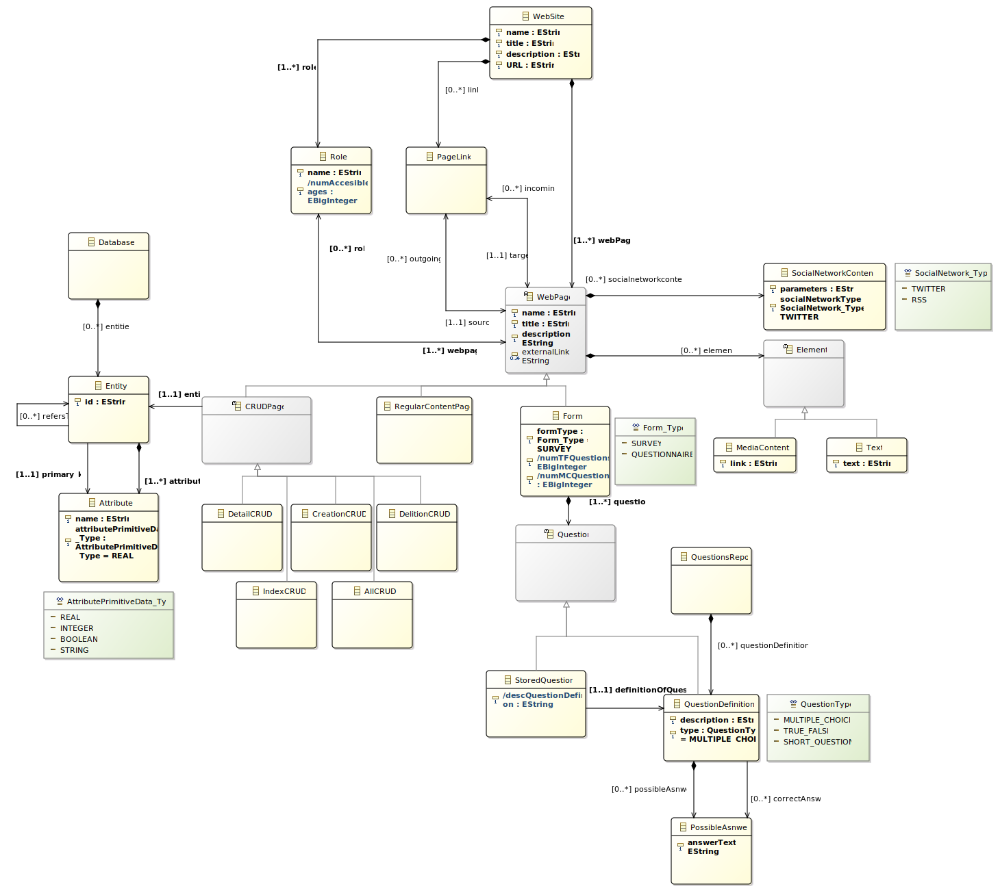

Author: José María Crespo Sánchez, Enrique Vílchez Campillejo
Last Updated: 05-06-2020

Name: WebDevProjectMM
NsURI: https://www.WebDevProjectMM.com
NsPrefix: WebDevProjectMM
EClass: Role
Description: This Meta-Class represents the role associated to an user while moving throught the WebSite.
Each Role has access to several WebPages.
- (1..1) name: EString
- (1..1) numAccesiblePages: EBigInteger = self.webpage->size()
- (1..*) webpage#role : WebPage
EClass: WebSite
Description: WebSite Meta-Class represents the root where all the WebPages and roles are contained.
It has a path called 'URL' used by all the webpages contained in it, appart from other attributes for self-describing.
- (1..1) name: EString
- (1..1) title: EString
- (1..1) description: EString
- (1..1) URL: EString
- (1..*) roles : Role (Composition)
- (1..*) webPages : WebPage (Composition)
- (0..*) link : PageLink (Composition)
- invariant R6MustIncludeAtLeastOneQuestionnaire:
let allForms : Collection(Form) = self.webPages->selectByKind(Form),
existsAnyQuestionnaires : Boolean = allForms->exists(f : Form | f.formType = Form_Type::QUESTIONNAIRE)
in
existsAnyQuestionnaires
- invariant R6MustIncludeAtLeastOneSurvey:
let allForms : Collection(Form) = self.webPages->selectByKind(Form),
existsAnySurvey : Boolean = allForms->exists(f : Form | f.formType = Form_Type::SURVEY)
in
existsAnySurvey
EClass: WebPage(abstract)
Description: WebPage represents instances of webpages contained in the WebSite. Each of those webpages can be of any of the sub-types of webpage, but not of type webpage, as it is an abstract class.
Each webpage can be accessed by any number of roles.
Also, each webpage has links to other webpages, that can be inside our model or outside from our model (external links).
Finally, each webpage can contain any number of elements (media elements or text elements), and any number of social network content.
- (1..1) name: EString
- (1..1) title: EString
- (1..1) description: EString
- (0..*) externalLink: EString
- (0..*) socialnetworkcontent : SocialNetworkContent (Composition)
- (0..*) elements : Elements (Composition)
- (0..*) outgoing#source : PageLink
- (0..*) incoming#target : PageLink
- (0..*) role#webpage : Role
- invariant R2isolatedWebPage:
Self.role->size() > 0 or self.incoming->size() > 0
EClass: SocialNetworkContent
Description: SocialNetworkContent represents embedded content from social networks such as Twitter or RSS.
This content is shown in the webpage, according to the paramenters given by the user.
- (1..1) parameters: EString
- (1..1) socialNetworkType: SocialNetwork_Type
EClass: RegularContentPage
Description: RegulaContentPage represent pages that only have elements and social network content inside.
- (1..1) name: EString
- (1..1) title: EString
- (1..1) description: EString
- (0..*) externalLink: EString
- (0..*) socialnetworkcontent : SocialNetworkContent (Composition)
- (0..*) elements : Elements (Composition)
- (0..*) outgoing#source : PageLink
- (0..*) incoming#target : PageLink
- (0..*) role#webpage : Role
EClass: Form
Description: Form represent webpages of type Questionnaire or Survey, as the Meta-Class Form is abstract.
Forms are a set of questions that need to be answered by users.
- (1..1) name: EString
- (1..1) title: EString
- (1..1) description: EString
- (0..*) externalLink: EString
- (1..1) formType: Form_Type
- (1..1) numTFQuestions: EBigInteger = self.questions->select(q:Question|(q.oclIsKindOf(QuestionDefinition) and q.oclAsType(QuestionDefinition).type = QuestionType::TRUE_FALSE) or (q.oclIsKindOf(StoredQuestion) and q.oclAsType(StoredQuestion).definitionOfQuestion.type = QuestionType::TRUE_FALSE) )->size()
- (1..1) numMCQuestions: EBigInteger = self.questions->select(q:Question|(q.oclIsKindOf(QuestionDefinition) and q.oclAsType(QuestionDefinition).type = QuestionType::MULTIPLE_CHOICE) or (q.oclIsKindOf(StoredQuestion) and q.oclAsType(StoredQuestion).definitionOfQuestion.type = QuestionType::MULTIPLE_CHOICE) )->size()
- (0..*) socialnetworkcontent : SocialNetworkContent (Composition)
- (0..*) elements : Elements (Composition)
- (0..*) outgoing#source : PageLink
- (0..*) incoming#target : PageLink
- (0..*) role#webpage : Role
- (1..*) questions : Question (Composition)
- invariant R7AllQustionsInQuestionnaireHasCorrectAnswer:
let isQuestionnaire : Boolean = self.formType = Form_Type::QUESTIONNAIRE,
allQuestionDefinitions : Collection(QuestionDefinition) = self.questions->selectByKind(QuestionDefinition),
allQuestionDefinitionsHaveAnAnswer : Boolean = allQuestionDefinitions->forAll(q : QuestionDefinition | q.correctAnswer->size() > 0),
allStoredQuestions : Collection(StoredQuestion) = self.questions->selectByKind(StoredQuestion),
allStoredQuestionsHaveAnAnswer : Boolean = allStoredQuestions->forAll(q : StoredQuestion | q.definitionOfQuestion.oclAsType(QuestionDefinition).correctAnswer->size() > 0)
in
isQuestionnaire implies
(
(allQuestionDefinitions->size() > 0 implies allQuestionDefinitionsHaveAnAnswer)
and
(allStoredQuestions->size() > 0 implies allStoredQuestionsHaveAnAnswer)
)
EClass: Question(abstract)
Description: Question is the representation for a question, that can be an StoredQuestion or a QuestionDefinition, as Question Meta-Class is abstract.
EClass: StoredQuestion
Description: StoredQuestion represent questions added to a Form, that are taken from the database repository or from existing QuestionDefinition.
An StoredQuestion is basically a pointer to a QuestionDefinition, and is designed so that the user is not creating new questions all the time and can reuse the ones already created.
- (1..1) descQuestionDefinition: EString = if self.definitionOfQuestion->size() = 1 then self.definitionOfQuestion.description else '' endif
- (1..1) definitionOfQuestion : QuestionDefinition
EClass: QuestionsRepo
Description: QuestionsRepo represents an external database composed by a number of QuestionDefinitions.
This representation is a local representation, with its own model separated form the WebSite model, as QuestionRepo works as another root.
- (0..*) questionDefinitions : QuestionDefinition (Composition)
EClass: QuestionDefinition
Description: QuestionDefinition represents all the data of each question. This is, its description and its type.
Also, is connected to all its possible answers, and to its correct answer or answers.
Depending on the type, each question could have from 0 to many correct answers, but allways its correct answer has to be included in the possible answers.
- (1..1) description: EString
- (1..1) type: QuestionType
- (0..*) possibleAsnwer : PossibleAsnwer (Composition)
- (0..*) correctAnswer : PossibleAsnwer
- invariant OnlyItsOwnAnswers:
Self.correctAnswer->size() > 0 implies self.possibleAsnwer->includesAll(self.correctAnswer)
- invariant TrueFalseHaveOnlyOneCorrectAnswer:
(self.type = QuestionType::TRUE_FALSE) implies self.correctAnswer->size() < 2
EClass: PossibleAsnwer
Description: PossibleAnswer represents a text as a possible answer for a question definition.
- (1..1) answerText: EString
EClass: Elements(abstract)
Description: Elements represent embedded elements in a webpage, that could be media elements or text elements, but not elements itself, as it is abstract.
These elements are represented visualy in the webpage.
EClass: Text
Description: Text Elements are string elements that are embedded in the webpage to show a message.
EClass: Database
Description: Database represents an external database composed by a number of Entities.
This representation is a local representation, with its own model separated form the WebSite model, as Database works as another root.
- (0..*) entities : Entity (Composition)
EClass: Entity
Description: Entity represents a table of the database.
Each table is composed by several number of columns, designed as attributes, and any number of references to other tables.
Also, each table has a pointer to an attribute of its own, representing its primary key used in SQL databases.
- (1..*) attributes : Attribute (Composition)
- (0..*) refersTo : Entity
- (1..1) primary_key : Attribute
- invariant PrimaryKeyMustBeOwnAttribute:
Self.attributes->includes(self.primary_key)
- invariant CanNotReferToItself:
Not self.refersTo->includes(self)
EClass: Attribute
Description: Attribute represents a column of a table from the database.
Each attribute has a name and a type.
- (1..1) name: EString
- (1..1) attributePrimitiveData_Type: AttributePrimitiveData_Type
EEnum: QuestionType
Description: QuestionType represents the enumeration of different types that a QuestionDefinition could have.
{0: MULTIPLE_CHOICE
, 1: TRUE_FALSE
, 2: SHORT_QUESTION
}
EEnum: AttributePrimitiveData_Type
Description: AttributePrimitiveData_Type represents the type of an attribute from an entity.
{0: REAL
, 1: INTEGER
, 2: BOOLEAN
, 3: STRING
}
EClass: PageLink
Description: PageLink represents links between webpages, by using source and target pointers.
These links are used to move from a webpage (source) to another (target).
- (1..1) source#outgoing : WebPage
- (1..1) target#incoming : WebPage
- invariant LinkCanNotBeToItself:
Self.source <> self.target
EClass: MediaContent
Description: MediaContent Elements represent all the elements that are images, videos, sounds, etc.
These elements are embedded into the webpage, by using a uri as parameter for finding it.
EEnum: SocialNetwork_Type
Description: SocialNetworkType represents the types of social network content that can be added to the webpage.
In this moment we have Twitter and RSS, but this EENum is created for letting the developer to add more in the future.
{0: TWITTER
, 1: RSS
}
EEnum: Form_Type
Description: Form_Type represents the type of a Form, that could be Survey if the result of the questions doesn't matter, or Questionnaire if the result matters.
{0: SURVEY
, 1: QUESTIONNAIRE
}
EClass: CRUDPage(abstract)
Description: CRUDPage represents a kind of webpage designated to read, write, update or delete data from the database.
Each CRUDPage is associated to an entity, which is a table from the database.
- (1..1) name: EString
- (1..1) title: EString
- (1..1) description: EString
- (0..*) externalLink: EString
- (0..*) socialnetworkcontent : SocialNetworkContent (Composition)
- (0..*) elements : Elements (Composition)
- (0..*) outgoing#source : PageLink
- (0..*) incoming#target : PageLink
- (0..*) role#webpage : Role
- (1..1) entity : Entity
EClass: CreationCRUD
Description: CreationCRUD represents a webpage for creating a new instace of the entity associated to that CRUDPage into the database.
- (1..1) name: EString
- (1..1) title: EString
- (1..1) description: EString
- (0..*) externalLink: EString
- (0..*) socialnetworkcontent : SocialNetworkContent (Composition)
- (0..*) elements : Elements (Composition)
- (0..*) outgoing#source : PageLink
- (0..*) incoming#target : PageLink
- (0..*) role#webpage : Role
- (1..1) entity : Entity
EClass: DelitionCRUD
Description: DelitionCRUD represents a webpage for deliting an instace of the entity associated to that CRUDPage from the database.
- (1..1) name: EString
- (1..1) title: EString
- (1..1) description: EString
- (0..*) externalLink: EString
- (0..*) socialnetworkcontent : SocialNetworkContent (Composition)
- (0..*) elements : Elements (Composition)
- (0..*) outgoing#source : PageLink
- (0..*) incoming#target : PageLink
- (0..*) role#webpage : Role
- (1..1) entity : Entity
EClass: AllCRUD
Description: AllCRUD represents a webpage for generating all the other CRUDPages associated with an entity.
- (1..1) name: EString
- (1..1) title: EString
- (1..1) description: EString
- (0..*) externalLink: EString
- (0..*) socialnetworkcontent : SocialNetworkContent (Composition)
- (0..*) elements : Elements (Composition)
- (0..*) outgoing#source : PageLink
- (0..*) incoming#target : PageLink
- (0..*) role#webpage : Role
- (1..1) entity : Entity
- invariant R3ALLCRUDImpliesNoOtherCRUD:
let allCRUDPages : Collection(CRUDPage) = self.oclContainer().oclAsType(WebSite).webPages->selectByKind(CRUDPage),
entityCRUDPages : Collection(CRUDPage) = allCRUDPages->select(p : CRUDPage | p.entity = self.entity),
notALLCRUDTypePages : Collection(CRUDPage) = entityCRUDPages->select(p : CRUDPage | not p.oclIsKindOf(AllCRUD))
in
notALLCRUDTypePages->size() = 0
- invariant OnlyOneCRUDOfEachTypeMax:
let allCRUDPages : Collection(CRUDPage) = self.oclContainer().oclAsType(WebSite).webPages->selectByKind(CRUDPage),
entityCRUDPages : Collection(CRUDPage) = allCRUDPages->select(p : CRUDPage | p.entity = self.entity),
AllCRUDTypePages : Collection(CRUDPage) = entityCRUDPages->selectByKind(AllCRUD),
IndexCRUDTypePages : Collection(CRUDPage) = entityCRUDPages->selectByKind(IndexCRUD),
DetailCRUDTypePages : Collection(CRUDPage) = entityCRUDPages->selectByKind(DetailCRUD),
CreationCRUDTypePages : Collection(CRUDPage) = entityCRUDPages->selectByKind(CreationCRUD),
DelitionCRUDTypePages : Collection(CRUDPage) = entityCRUDPages->selectByKind(DelitionCRUD)
in
AllCRUDTypePages->size() < 2 and
DetailCRUDTypePages->size() < 2 and
IndexCRUDTypePages->size() < 2 and
CreationCRUDTypePages->size() < 2 and
DelitionCRUDTypePages->size() < 2
EClass: IndexCRUD
Description: IndexCRUD represents a webpage for showing all the instances of the entity associated with that CRUDPage.
- (1..1) name: EString
- (1..1) title: EString
- (1..1) description: EString
- (0..*) externalLink: EString
- (0..*) socialnetworkcontent : SocialNetworkContent (Composition)
- (0..*) elements : Elements (Composition)
- (0..*) outgoing#source : PageLink
- (0..*) incoming#target : PageLink
- (0..*) role#webpage : Role
- (1..1) entity : Entity
- invariant R4IndexImpliesDetail:
let allDetailPages : Collection(CRUDPage) = self.oclContainer().oclAsType(WebSite).webPages->selectByKind(DetailCRUD)
in
allDetailPages->exists(p : CRUDPage | p.entity = self.entity)
EClass: DetailCRUD
Description: DetailCRUD represents a webpage for checking the details of an instance of the entity associated to the CRUDPage.
- (1..1) name: EString
- (1..1) title: EString
- (1..1) description: EString
- (0..*) externalLink: EString
- (0..*) socialnetworkcontent : SocialNetworkContent (Composition)
- (0..*) elements : Elements (Composition)
- (0..*) outgoing#source : PageLink
- (0..*) incoming#target : PageLink
- (0..*) role#webpage : Role
- (1..1) entity : Entity
- invariant R4DetailImpliesIndex:
let allIndexPages : Collection(CRUDPage) = self.oclContainer().oclAsType(WebSite).webPages->selectByKind(IndexCRUD)
in
allIndexPages->exists(p : CRUDPage | p.entity = self.entity)